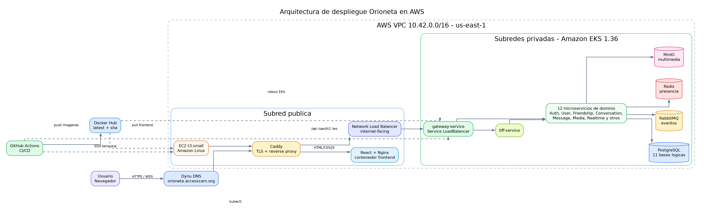
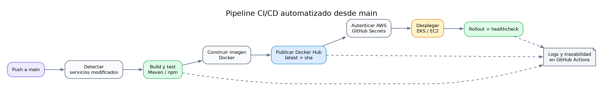
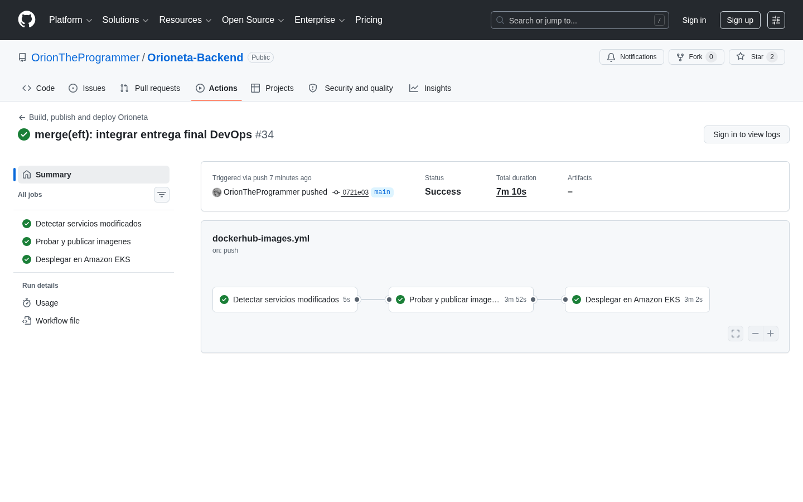
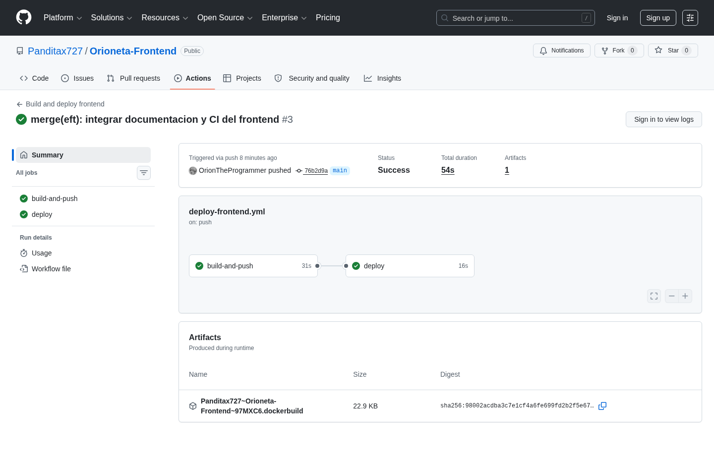
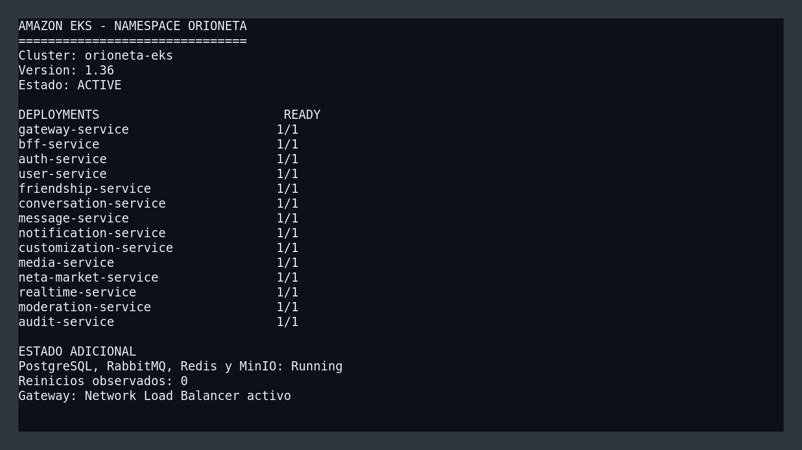
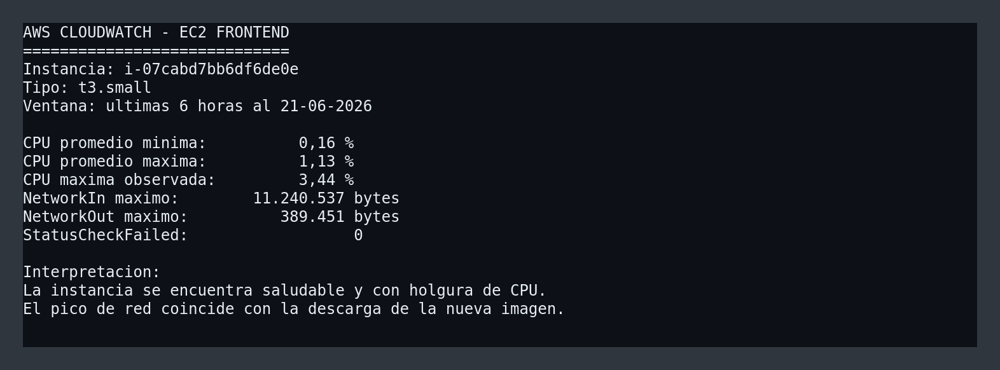
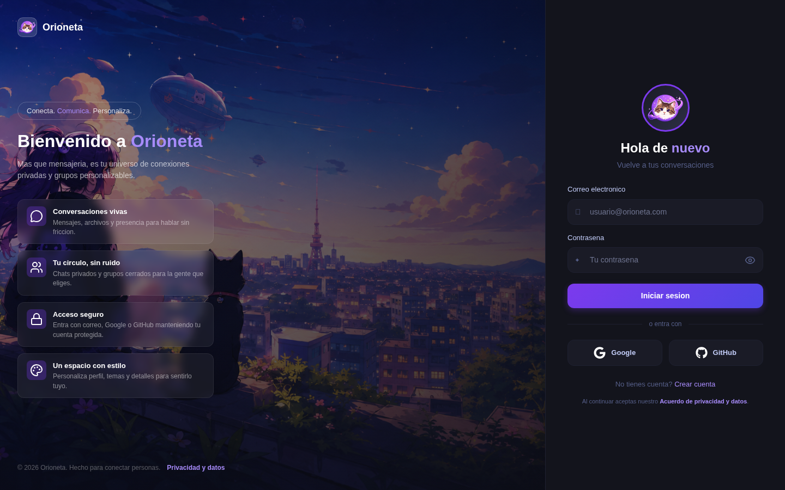

Automatización CI/CD, contenerización y despliegue en Amazon EKS
Orioneta es una plataforma web de mensajería privada que integra frontend,
backend de microservicios y persistencia relacional. El objetivo DevOps fue
automatizar el ciclo completo desde un cambio en la rama
main hasta una versión accesible por HTTPS en AWS.
La solución utiliza React y Vite en el frontend; Java 25, Spring Boot y Maven en el backend; PostgreSQL como base relacional; RabbitMQ para eventos; Redis para presencia y MinIO para archivos. Todos los componentes se ejecutan en contenedores. El backend se orquesta con Amazon EKS y el frontend se despliega en una instancia EC2 protegida por Caddy.
GitHub Actions ejecuta build, pruebas, creación de imágenes, publicación en Docker Hub y despliegue. En la validación final se ejecutaron 68 pruebas backend sin fallos, los 14 Deployments quedaron disponibles, los pods no registraron reinicios y la aplicación respondió correctamente por HTTPS y WebSocket.
Orioneta permite registrar usuarios, iniciar sesión localmente o mediante Google/GitHub, administrar perfiles, agregar amistades por friend code, crear chats privados o grupos, enviar texto y multimedia y recibir eventos en tiempo real. El frontend incorpora además llamadas WebRTC, personalización y Neta Market.
El alcance de esta entrega no consiste únicamente en demostrar funciones de negocio. Se busca demostrar reproducibilidad, automatización, observabilidad y operación en nube. Por ello, código, infraestructura y documentación se mantienen versionados en repositorios públicos.
| Repositorio | Responsabilidad | Rama productiva |
|---|---|---|
| Orioneta-Backend | Microservicios, Compose, Kubernetes y CI/CD de EKS | main |
| Orioneta-Frontend | React, Docker/Nginx, Caddy y despliegue EC2 | main |
Se aplicó GitHub Flow. El trabajo se desarrolló en ramas descriptivas con
prefijos feature/, fix/ y chore/.
Los cambios integrados se fusionaron en main, rama que activa
los despliegues. Los mensajes de commit usan ámbito y propósito, por
ejemplo fix(k8s): estabilizar despliegues y persistencia en EKS.
Esta estrategia mantiene una única rama siempre desplegable, reduce ramas de larga vida y permite asociar cada imagen con el SHA que originó su construcción.

Figura 1. Arquitectura real desplegada en AWS.
La arquitectura separa el acceso público del plano interno. Caddy recibe HTTPS en EC2, sirve React/Nginx y envía API o WebSocket al Network Load Balancer. Dentro de EKS, solo el Gateway es público; los demás Services son ClusterIP.
El frontend usa rutas same-origin. Las solicitudes a /api/*,
/oauth2/* y /ws/* pasan por Caddy hacia el NLB.
Este diseño evita exponer URLs internas en el bundle y elimina problemas
CORS entre frontend y gateway.
gateway-service centraliza rutas, CORS y validación de entrada.
bff-service compone respuestas adecuadas para el cliente. Los
servicios se descubren mediante nombres DNS internos de Kubernetes, por
ejemplo http://user-service:8083.
PostgreSQL funciona como motor compartido, pero mantiene una base lógica por servicio para evitar acoplamiento de tablas. RabbitMQ desacopla mensajes, notificaciones y realtime. Redis conserva presencia y sesiones activas; MinIO almacena objetos multimedia y PostgreSQL sus metadatos.
Los Dockerfile Java utilizan dos etapas. La primera selecciona el JAR
verificado por Maven; la segunda emplea
eclipse-temurin:25-jre-alpine y ejecuta con el usuario
orioneta sin privilegios. La imagen final no contiene Maven,
código fuente ni herramientas de compilación.
FROM alpine:3.22 AS artifact
ARG JAR_FILE=target/*.jar
COPY ${JAR_FILE} /artifact/app.jar
FROM eclipse-temurin:25-jre-alpine
RUN addgroup -S orioneta && adduser -S -G orioneta orioneta
COPY --from=artifact --chown=orioneta:orioneta /artifact/app.jar /app/app.jar
USER orioneta
ENTRYPOINT ["java", "-jar", "/app/app.jar"]
Cada módulo incluye un .dockerignore que permite únicamente el
Dockerfile y el JAR. Esto reduce el contexto, evita filtrar archivos del IDE
y mejora el uso de caché.
El frontend sí compila dentro de Docker. Node 22 Alpine ejecuta
npm ci y npm run build; Nginx Alpine recibe
únicamente dist. El contenedor incluye un healthcheck en
/health.
Existen dos modalidades: docker-compose.yml inicia
infraestructura para trabajar desde el IDE, mientras
docker-compose.prod.yml integra frontend, proxy, todos los
microservicios y datos. Los perfiles permiten controlar consumo de memoria.
cp .env.example .env docker compose -f docker-compose.prod.yml + --profile messaging --profile realtime --profile customization + --profile media --profile market --profile audit --profile observability + up -d
Caddy publica localhost:5173 y mantiene API y WebSocket bajo el
mismo origen. Los volúmenes conservan PostgreSQL, RabbitMQ, Redis, MinIO y
Grafana.
Se eligió Docker Hub porque los dos repositorios ya disponían de integración y las imágenes son públicas para fines académicos. Cada microservicio usa el patrón:
oriontheprogrammer/orioneta-<servicio>:latest oriontheprogrammer/orioneta-<servicio>:sha-<12 caracteres>
latest representa el estado desplegable de
main. La etiqueta SHA es inmutable y permite regresar a la
imagen exacta asociada a un commit. El frontend publica
latest y el SHA completo.
El login utiliza DOCKERHUB_USERNAME y
DOCKERHUB_TOKEN almacenados en GitHub Secrets; el token nunca se
guarda en el repositorio.

Figura 2. Etapas comunes de CI/CD.
mvn -B clean verify.
Figura 3. Pipeline backend exitoso en GitHub Actions.
Construye y publica la imagen, obtiene la IP del runner, crea una regla SSH
temporal, copia el Caddyfile, actualiza los contenedores, valida Caddy y
/health, y finalmente revoca la regla SSH con
always().

Figura 4. Pipeline frontend exitoso en GitHub Actions.
| Recurso | Configuración validada | Justificación |
|---|---|---|
| Región | us-east-1 | Disponibilidad del laboratorio y servicios requeridos. |
| VPC | 10.42.0.0/16 | Espacio suficiente para subredes públicas y privadas. |
| Subredes | 2 públicas + 2 privadas, dos AZ | Separación de exposición y tolerancia zonal. |
| EC2 | t3.small, Amazon Linux | Entrega de frontend y TLS con bajo costo. |
| EKS | orioneta-eks, Kubernetes 1.36 | Orquestación, reconciliación y escalabilidad. |
| NLB | Internet-facing | Entrada estable y soporte de conexiones persistentes. |
| EBS gp3 | Volúmenes cifrados | Persistencia para StatefulSets. |
EKS utiliza las subredes privadas 10.42.128.0/20 y
10.42.144.0/20. La EC2 se encuentra en la subred pública
10.42.0.0/20. El NLB es el único acceso directo al backend.
La configuración no sensible está en ConfigMap: perfiles, límites JVM y URLs internas. Los secretos se dividen entre GitHub Secrets y Kubernetes Secrets.
| Ubicación | Ejemplos | Control |
|---|---|---|
| GitHub Secrets | AWS, Docker Hub, OAuth, SSH | Enmascarados en logs y disponibles solo al workflow. |
| Kubernetes Secret | PostgreSQL, RabbitMQ, MinIO, JWT | Inyectados como variables; no aparecen en manifiestos Git. |
| ConfigMap | URLs internas, perfil prod | Versionado por ser no sensible. |
| .env.example | Nombres y valores demostrativos | No contiene credenciales reales. |
En AWS Academy las credenciales son temporales. El pipeline usa el rol del
laboratorio solo durante la ejecución. Para una cuenta permanente, la
mejora recomendada es GitHub OIDC con un rol IAM que permita únicamente
describir el cluster, autenticarse y actualizar recursos del namespace
orioneta.
Los 14 Deployments quedaron con una réplica disponible. PostgreSQL, RabbitMQ, Redis y MinIO permanecieron Running y no se observaron reinicios.

Figura 5. Estado del namespace posterior al rollout.
Cada microservicio expone liveness, readiness, métricas y Prometheus. Los
logs siguen el patrón stdout/stderr y se consultan con
kubectl logs. Los logs completos de build y deploy permanecen
en GitHub Actions.
CloudWatch confirmó baja utilización de CPU, tráfico de red durante el despliegue y cero fallos de estado en la instancia frontend.

Figura 6. Resumen de métricas obtenidas mediante AWS CloudWatch.
Se eligió EKS en lugar de un conjunto de contenedores administrados manualmente porque Kubernetes mantiene el estado deseado. Si un proceso falla, el pod se reemplaza; si readiness falla, deja de recibir tráfico; si se publica una nueva imagen, el Deployment controla la actualización.
| Capacidad | Docker manual | EKS |
|---|---|---|
| Recuperación | Reinicio manual o script | Reconciliación automática |
| Descubrimiento | IPs/configuración manual | Service DNS |
| Escalado | Crear y conectar contenedores | Réplicas/HPA |
| Actualización | Reemplazo imperativo | Rollout declarativo |
| Salud | Scripts separados | Probes integrados |
| Persistencia | Volúmenes locales | PVC y EBS |
El laboratorio mantiene una réplica por servicio para limitar costos, pero los Deployments permiten escalar. El Gateway y los servicios stateless son candidatos directos a HPA. Los componentes stateful requieren además una estrategia de replicación o servicios administrados.
| Prueba | Resultado |
|---|---|
mvn -B clean verify | 68 pruebas, 0 fallos, 0 errores |
npm run lint | Correcto |
npm run build | Correcto |
| Frontend HTTPS | HTTP 200 |
| Gateway readiness | {"status":"UP"} |
| OAuth providers | Google y GitHub disponibles |
| WebSocket | Apertura y cierre correctos por WSS |
| Rollout EKS | 14/14 Deployments disponibles |

Figura 7. Pantalla de acceso servida desde producción.
El proyecto demuestra un flujo DevOps completo: el mismo commit que supera pruebas produce imágenes trazables y se despliega automáticamente. La separación frontend/EC2 y backend/EKS permite entregar TLS de forma simple sin exponer bases de datos o microservicios.
EKS aporta capacidades superiores al despliegue manual, aunque aumenta complejidad y costo. Para un entorno académico, el uso de una réplica y servicios stateful internos es razonable; para producción se migrarían PostgreSQL, RabbitMQ, Redis y archivos a servicios administrados.
Prioridades siguientes:
| Indicador | Evidencia | Ubicación |
|---|---|---|
| IE1 Versiones y arquitectura | GitHub Flow, commits descriptivos, diagrama completo | Repositorios y Figura 1 |
| IE2 Contenerización | Dockerfile multietapa, Alpine, non-root, Compose completo | Sección 5 |
| IE3 CI/CD | Build, test, push y deploy automáticos | Figuras 2, 3 y 4 |
| IE4 EKS/ECS | EKS activo, NLB, 14 Deployments, PVC EBS | Secciones 8 y 12 |
| IE5 Funcionalidad | Pruebas, health, OAuth, WebSocket y pods Ready | Sección 13 |
| IE6 Presentación | PPTX y guion de demostración/defensa | Carpeta docs/eft |
git log --oneline --decorate -10 docker compose -f docker-compose.prod.yml config --services docker compose -f docker-compose.prod.yml ps mvn -B clean verify npm run lint npm run build kubectl -n orioneta get deployments kubectl -n orioneta get pods kubectl -n orioneta get services curl https://orioneta.accesscam.org/ curl https://orioneta.accesscam.org/actuator/health/readiness
.github/workflows/dockerhub-images.yml.github/workflows/manual-deploy-eks.ymldocker-compose.yml y docker-compose.prod.ymlk8s/ y deploy/k8s-lab/docs/seguridad.md, docs/observabilidad.md y docs/pruebas.mdDocumento generado a partir del estado real de los repositorios y del entorno AWS validado el 21 de junio de 2026. No contiene contraseñas, tokens ni llaves privadas.